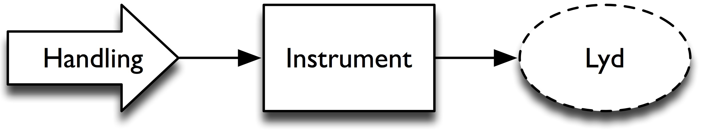
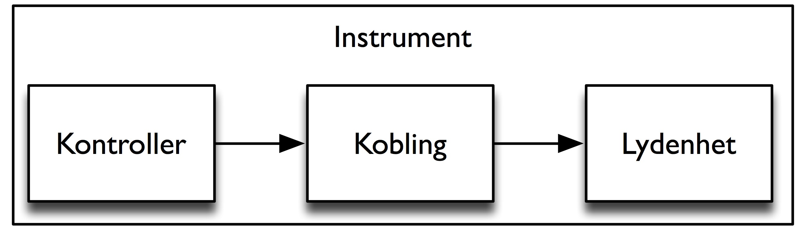
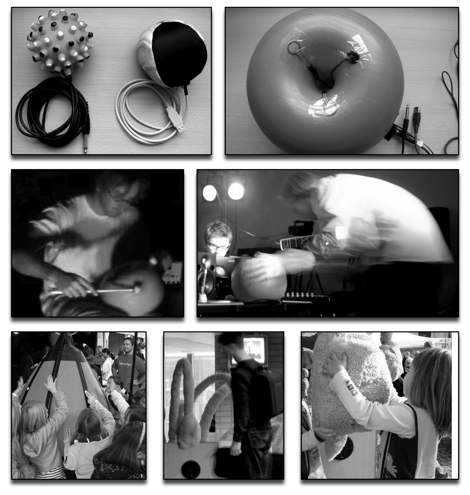

8. Design av handling og lyd#
Kapitlet viser hvordan koblinger mellom handling og lyd brukes i musikk og film. Deretter omtales forskjellige strategier i design av kunstige koblinger, særlig i digitale musikkinstrumenter.
Handling–lyd-koblinger i musikk og film#
I forrige kapittel så vi på hvordan naturlige koblinger mellom handling og lyd er bygget opp, og hvordan vår mentale representasjon er knyttet til både handlingen og lyden. Nettopp denne sterke koblingen mellom handling og lyd kan brukes aktivt for å forsterke, men også for å forvirre, sansene våre. Komponister kan bruke disse koblingene aktivt i arbeidet med å utvikle nye og spennende klanger, både akustisk og elektronisk. Mange orkesterkomponister arbeider med utvidelser av klangkvaliteter ved å blande lydene fra forskjellige instrumentgrupper. Et eksempel på en slik utvidelse kan være å legge en lang, utholdt tone til et impulsivt anslag. På den måten vil man få en sammensatt lyd som er både impulsiv og utholdt på samme tid.
Eksperimentering med nye og sammensatte klanger står sentralt i mye av den elektroakustiske musikken, musikk som skapes elektronisk og spilles av over høyttalere. Mye av forskningen innenfor dette feltet dreier seg om utviklingen av teknikker for å skape lyder som utfordrer vår økologiske kunnskap om naturlige handling–lyd-koblinger. Et eksempel på dette er lydmodellen blotar, en kombinasjon av fløyte, elektrisk gitar og mandolin (Cook 1997). Når man hører en slik lyd, kan man oppleve flere forskjellige og motstridende mentale bilder, noe som kan åpne for en spennende musikalsk opplevelse.
Ved hjelp av digital signalbehandling er det mulig å ta utgangspunkt i en naturlig lyd, for så å forandre den på forskjellige måter. I elektronisk dansemusikk hører man ofte symballyder som spilles baklengs. Et slikt reversert anslag utfordrer vår økologiske erfaring med prefiks, eksitasjon og suffiks ved å snu på rekkefølgen. Resultatet kan være at man får en kroppslig reaksjon som skaper spenning og intensitet i musikkopplevelsen.
Design av handling og lyd er en viktig del av TV- og filmproduksjoner. I de fleste filmer blir lyden designet for å virke så naturlig som mulig og for å gi publikum en bedre totalopplevelse. Filmlyd tas gjerne opp, eller lages kunstig, helt uavhengig av bildene. Ofte dubbes stemmene til skuespillerne, det vil si at dialogen tas opp i ettertid mens skuespilleren forsøker å synkronisere med leppebevegelsene. Tilsvarende skaper foley-artistene de andre lydene, som fottrinn, dører som åpnes og lukkes, eksplosjoner osv. Det er ikke uvanlig at andre materialer og handlinger enn de opprinnelige, blir brukt for å skape den ”riktige” lyden. Dette er fordi man har funnet at et autentisk opptak ikke virker naturlig når det spilles av over høyttaleranlegget i en kinosal.
I film kan handling–lyd-koblinger strekkes til det ekstreme. Komedier og animasjonsfilmer bruker ofte sterkt overdrevne koblinger for å skape spenning eller humor. I tegnefilmer lydsetter man ofte at en person faller ved å spille en nedadgående tone etterfulgt av et stort brak idet personen treffer underlaget. Lignende overdrevne koblinger ble også brukt i slapstick-komedier, og allerede i stumfilmens dager var det vanlig at akkompagnatøren la inn lydlige hendelser som støttet opp under eller kontrasterte med handlingen. I de fleste slike tilfeller er lyddesignet så overdrevet at vi umiddelbart forstår det morsomme i situasjonen. Ved i tillegg å legge til kunstig latter i bakgrunnen, som er populært i mange TV-serier, ønsker produsenten å skape en opplevelse av at vi ser på serien sammen med et større publikum. Lydeffektene brukes da aktivt for å simulere personer og handlingsaktivitet som ikke egentlig er til stede.
Handling-lyd-koblinger kan brukes for å skape en tvetydig effekt i filmer. En vanlig overgangsteknikk mellom scener er å klippe inn lyden av neste scene noen sekunder før bildet kommer. Her skaper lyden en forventning om hva som kommer til å skje, enten det er lyden av omgivelser eller av noen som snakker. Andre eksempler er hvordan to lyder kan gli over i hverandre i overgangsscener. Et kjent eksempel på dette er åpningen av Apocalypse Now (Coppola 1979) der lyden og bildet av et helikopter blandes sammen med lyd og bilde av en vifte på rommet. Dette skaper en tvetydig situasjon både for hovedpersonen, men også for de som ser på. Her er det igjen vår økologiske erfaring med forskjellige lyder og handlinger som påvirker måten vi oppfatter de kunstige koblingene.
Lydinteraksjonsdesign#
Design av koblinger mellom lyd og handling i musikk og film har mye til felles med fagfeltet lydinteraksjonsdesign. Innen det generelle feltet interaksjonsdesign er fokuset å skape interaksjon mellom bruker og produkt, der produktet kan være alt fra en melkekartong til en nettleser på en datamaskin. Målet er å se på hvordan man kan utforme dette produktet slik at det blir enklest og best mulig tilgjengelig for brukeren. I lydinteraksjonsdesign er målet å se hvordan lyd kan spille en vesentlig rolle i designet.
Mange av hovedutfordringene innen interaksjonsdesign er beskrevet i boken The design of Everyday Things av Donad A. Norman (1990). Her tar Norman et oppgjør med dårlig design og viser til en rekke eksempler på hvordan hverdagslige ting, alt fra dørhåndtak til telefoner, kan designes bedre. Med utgangspunkt i en Gibsoniansk tenkemåte fokuserer Norman på at vi må designe objekter slik at man umiddelbart kan forstå hvordan det skal brukes.
Norman trekker frem et miksebord som et eksempel på et lite brukervennlig design. De fleste miksebord er konstruert med en rekke rader av brytere, knapper og lys. Dette ser kanskje logisk og helhetlig ut, og det er enkelt å montere og billig å bygge, men uendelige rader med rekker av identiske brytere kan forvirre. Selv om mange mennesker har lært seg å bruke miksebord effektivt, kan man undre seg over at det ikke har blitt designet bedre og mer intuitive systemer for å kontrollere lyd. Tvert imot er mye av den kommersielt tilgjengelige musikkteknologien designet ut fra de tekniske begrensningene til komponentene man hadde til rådighet for flere tiår siden.
Når det gjelder design av kunstige koblinger mellom handling og lyd kan vi identifisere to forskjellige designstrategier: praktisk eller spennende. En praktisk designstrategi fokuserer på å skape kunstige handling–lyd-koblinger som ligger tettest mulig opp til naturlige koblinger. En slik designtilnærming vil være viktig når man designer systemer der effektiv kommunikasjon og interaksjon er det mest sentrale, for eksempel i varslingsanlegg eller kontrollsystemer der det ikke bør skje feil. Strategier som fokuserer på et spennende design, finner man ofte i underholdingselektronikken. Her er det viktigste å skape interessante, morsomme og overraskende koblinger, og det legges mindre vekt på om koblingene kan forstås av brukeren.
Disse to designstrategiene kan ses på som uavhengige og til en viss grad motstridende kategorier. Den praktiske siden fokuserer hovedsakelig på å skape koblinger som gjør at designet virker enkelt og intuitivt å bruke. Den spennende siden er mer opptatt av å skape en interessant opplevelse. Når det gjelder opplevelsen, kan man fra brukerens perspektiv se at de praktiske koblingene ofte kan oppleves som kjedelige og lite interessante, mens de spennende koblingene ofte kan være så lite fundert i en økologisk tradisjon at de er vanskelige å forstå og derfor fremstår som kaotiske. Utfordringen blir å finne en balanse mellom disse to sidene, slik at praktisk design kan føles interessant, og spennende design kan virke naturlig.
I kapittel 7 så vi at kunstige koblinger aldri kan bli like sterke som de naturlige. Hvis vi ønsker å skape praktiske koblinger kan det derfor være en fordel å ta utgangspunkt i en naturlig kobling når vi designer en kunstig kobling. I tilfeller der interaksjonen i seg selv forsøker å simulere en naturlig kobling, slik som i et digitalt piano, er utfordringen å utvikle løsninger som kommer så nærme som mulig til den koblingen man forsøker å simulere. I tilfeller der det ikke finnes noen naturlig handling–lyd-kobling å sammenligne med, kan det være verdt å se på noen av de underliggende kvalitetene i interaksjonen. For eksempel burde en impulsiv handling styre en impulsiv lyd, og en utholdt handling burde styre en utholdt lyd. På samme måte bør klangkvalitetene og lydstyrken til lyden tilpasses til egenskapene til den lydproduserende handlingen. Dette kan virke som et enkelt prinsipp, men realiteten er at veldige mye lydinteraksjonsdesign ikke tar hensyn til dette. Dårlig design av handling–lyd-koblinger finner vi ikke bare i minibanker eller mobiltelefoner, men også i mange elektroniske instrumenter.
Instrumenter#
Musikkinstrumenter, både akustiske og elektroniske, kan ses som et bindeledd mellom handling og lyd (figur 58).

I et akustisk instrument produseres lyden ved å tilføre energi til et objekt som så begynner å vibrere. Et elektronisk instrument er bygget opp av en kontroller, en lydenhet og koblingene mellom kontrolleren og lydenheten (figur 59). Betegnelsen kontroller refererer her til den fysiske enheten som man utøver med. En kontroller kan ikke produsere lyd i seg selv, den bare registrerer en handling og sender informasjon om denne handlingen videre til lydenheten. Lydenheten kan være en fysisk boks som inneholder elektroniske komponenter som skaper eller forandrer lyd (effektpedal, synthesizer osv.), eller den kan være et program som kjører på en datamaskin.

Det er mulig å kjøpe ferdige elektroniske instrumenter, for eksempel et keyboard, men det er også blitt vanlig å kjøpe kontrollere og lydenheter separat. Da er utfordringen å finne ut hvilke kontrollsignaler som skal styre hvilken type lyd, altså skape en kunstig handling–lyd-kobling. Dette skiller seg radikalt fra designet av akustiske instrumenter der kontrollenheten og lydenheten vanskelig lar seg skille. Når man bygger en akustisk gitar, er halsen og gripebrettet nødvendigvis en del av det klingende instrumentet, og dette må det tas hensyn til i konstruksjonen. Ettersom det ikke finnes noen direkte kobling mellom kontrolleren og lydenheten i et elektronisk instrument, må man rett og slett teste ut forskjellige koblinger for å se hva som fungerer. Design av elektroniske instrumenter gjør det derfor mulig å eksperimentere med koblinger mellom handling og lyd.
Frikoblingen av handling og lyd i elektroniske instrumenter kan på mange måter ses som en lettelse, siden kontrollere og lydenheter kan utvikles i separate prosesser. Men det skaper også utfordringer når det gjelder hvordan utøver og publikum opplever koblingene som er laget. En designprosess som ikke tar hensyn til koblingenes betydning, vil nødvendigvis resultere i et instrument som ikke oppleves særlig intuitivt.
Vi kan identifisere tre retninger innen dagens kommersielle musikkontrollere:
Kontrollere som er basert på tangentinstrumenter. Variasjonen ligger her i størrelsen på klaviaturet, om det er lette eller tunge tangenter, samt antall ekstra knapper og brytere.
Kontrollere som er basert på miksepulter. Her synes det som om målet er å få inn så mange knapper og brytere som mulig.
Andre typer kontrollere. Disse kan være basert på akustiske instrumenter, for eksempel blåsekontrollere og trommekontrollere, eller et friere design.
Det er særlig de to første kategoriene som har stor utbredelse. Slike kontrollere kan være hensiktsmessige til mange formål, men et ensidig fokus på kontrollere med mange knapper og brytere påvirker også i stor grad musikken man kan lage med denne teknologien. Eksempler på dette kan ses i mange elektroniske instrumenter der man bruker pianolignende kontrollere for å styre alle former for lydenheter. Hvis man styrer fiolinlyd med pianobevegelser, vil nok dette oppleves som en unaturlig kobling for mange, ettersom det bryter med den grunnleggende forståelsen av sammenhengen mellom handling og lyd.
Problemet med MIDI#
Piringer (2001) argumenterer for at selv om bruken av musikkteknologi har eksplodert de siste tiårene, så har innovasjonen gått sterkt tilbake. Dette kan til en viss grad tilskrives MIDI-standarden som ble introdusert i 1983. MIDI, eller Musical Instruments Digital Interface som forkortelsen står for, fungerer fremdeles som standard i de fleste kommersielle musikkteknologisystemer. MIDI revolusjonerte bransjen ved å åpne for en enkel og standardisert måte å sende informasjon fra kontrollere til lydenheter, slik at en hvilken som helst kontroller kunne brukes til å styre en lydenhet. Selv om det ikke var spesifisert i den opprinnelige standarden, gjorde General MIDI (GM) og GS-spesifikasjonene fra Roland det mulig å standardisere hvilke klangfargemuligheter de fleste MIDI-baserte systemene skulle støtte. Dette gjør det mulig å spille MIDI-filer på forskjellige systemer med tilnærmet samme lydlige resultat.
MIDI er en av de eldste og mest suksessfulle standardene i digital teknologisammenheng. Den store utspredelsen har gjort at standarden fremdeles er i bruk, og det er lite sannsynlig at den blir erstattet i den nærmeste fremtid. Selv om MIDI fungerer fint i seg selv, har standarden noen uheldige begrensninger som gjør det vanskelig å komme vekk fra kontrollere som baserer seg på tangenter eller brytere. Flere av disse begrensningene ble påpekt allerede kort tid etter at MIDI ble introdusert (Loy 1985; Moore 1988). Ett problem var overføringshastigheten mellom systemene, noe som gjorde at det var vanskelig å spille mange toner samtidig uten at det hørtes ut som en arpeggio. Dette har blitt bedre nå som de fleste MIDI-baserte systemene bruker USB-kabler i kommunikasjonen.
Et mer grunnleggende og alvorlig problem med MIDI er at standarden er basert på et temperert 12-tonesystem, og er begrenset til 128 forskjellige toner. Dette holder for å beskrive tangentene på et pianoklaviatur, men gjør det tilnærmet umulig å representere mikrotonalitet, glidende overganger mellom toner og andre former for sammensatte tonebevegelser som er vanlig i de fleste stryke- og blåseinstrumenter. Dette kompliseres ytterligere ved at en tone i MIDI-systemet representeres med én beskjed når en tone slås an (”noteon”), og én beskjed når tonen avsluttes (”noteoff”). Det er mulig å legge inn såkalte ”pitch bend”-beskjeder for å forandre på mikrotonaliteten, men dette må allikevel kobles sammen med en ”noteon”-beskjed for å skape lyden. Problemet ved det er at standarden legger opp til at kontrollere bare sender impulsiv handlingsinformasjon, og åpner i liten grad for å lage kontrollere der lyd kan spilles og modifiseres kontinuerlig. Derfor er størsteparten av dagens kommersielle kontrollere utformet med tangenter som på et piano.
MIDI som standard har vært med på å påvirke måten lyd blir designet på. Nettopp fordi kontrollinformasjonen som sendes, er basert på impulsive handlinger, har utøveren mistet muligheten til å kontrollere lyden kontinuerlig. Dette blir kompensert for ved å designe omhyllingskurver som bestemmer hvordan lyden skal utvikle seg over tid. Resultatet er at når man slår an en tone, så ”spiller” lyden seg selv. En slik funksjon ville vært unødvendig hvis man hadde hatt en kontinuerlig kontroller der brukeren selv kunne tilføre energien som trengs for å holde liv i lyden.
Tilsvarende blir såkalte lavfrekvente oscillatorer (LFO) gjerne tatt i bruk for å variere lyden. En oscillator er en funksjon som endrer seg kontinuerlig over tid, og som dermed egner seg godt for å skape variasjon i et signal. Problemet med slike funksjoner er imidlertid at man mister den direkte kontrollen over lyden, ettersom funksjonen lever sitt eget liv. Dette kunne vært unngått hvis kontrolleren hadde åpnet for en mer kompleks kobling mellom handling og lyd. Så hvis man sammenligner akustiske og elektroniske instrumenter, finner man ofte at de akustiske gir musikeren full kontroll over instrumentet, mens de elektroniske instrumentene brukes for å sette i gang forhåndsprogrammerte funksjoner. Mange tror derfor at elektroniske instrumenter er mindre ekspressive eller ”dårligere” enn akustiske instrumenter, uten at man har reflektert over hva som faktisk skjer i instrumentet.
Mange av de fysiske og teknologiske begrensningene som har ligget til grunn for utviklingen av elektroniske instrumenter, er ikke-eksisterende når man beveger seg over til programvarebaserte instrumenter. Da kunne man tro at økningen innen ny musikkteknologiprogramvare skulle åpne for nye paradigmer og måter å tenke om lydinteraksjonsdesign på. Dette har i liten grad skjedd. Mye ny programvare er basert på å implementere funksjonalitet som man finner i de gamle systemene. Resultatet er virtuelle miksepulter med de samme begrensningene man finner i de fysiske enhetene. Faktisk fungerer ofte slike virtuelle lydenheter dårligere enn de fysiske enhetene de forsøker å kopiere, ettersom man bare har én mus til å styre alle parametrene man før hadde separate knapper og brytere for. Dette har igjen ført til at det produseres stadig nye MIDI-kontrollere med enda flere brytere og knapper for å styre de virtuelle enhetene. Det er derfor behov for å tenke nytt rundt hvordan fremtidens musikkteknologi kan se ut; da bør man sette mennesket, kroppen og menneskets handlinger mer i fokus.
Alternativ musikkteknologi#
Som en motvekt til det kommersielle musikkteknologimarkedet har det vokst frem en sterk undergrunnskultur innenfor det som kalles nye instrumenter for musikalsk ekspressivitet (NIME). Utviklingen av nye former for elektroniske kontrollere og instrumenter skjer her både innenfor og utenfor akademiske institusjoner, og det har etter hvert blitt organisert egne konferanser og festivaler der denne nye teknologien presenteres og diskuteres. Det er verdt å legge merke til at mye av denne utviklingen skjer utenfor de mer tradisjonelle musikalske arenaene og med en tverrfaglig tilnærming. Ofte arbeider folk med bakgrunn fra informatikk, psykologi, arkitektur, kunst og musikk sammen om nye tilnærminger til lydinteraksjon i musikalsk sammenheng.
Utviklingen av nye kontrollere og instrumenter forandrer ikke bare måten vi spiller på, men endrer også vår oppfatning av hva musikk er og kan være. Moderne teknologi er her med på å bryte ned grensene mellom utøver og publikum, og gjør at begge disse gruppene kan være delaktige i musikkskapingen. Her kan vi snakke om en form for aktiv musikk, for å låne et begrep fra den amerikanske komponisten og musikkforskeren Tod Machover (2004). En aktiv musikkopplevelse kan være at brukeren selv kan være med på å påvirke musikken innenfor gitte rammer, ved hjelp av teknologi. Dette blir altså en mellomting mellom å passivt ”lytte” til musikk på en mediespiller og å aktivt spille musikk selv på et instrument. Den økte bruken av musikkdataspill, karaokelignende systemer og enkel musikkproduksjonsprogramvare viser at dette er noe mange ønsker.
Mye av dagens musikkteknologiforskning dreier seg om å utforske hvordan vi kan tenke nytt om musikkopplevelsen. Ved Universitetet i Oslo ser vi på hvordan det er mulig å lage musikkteknologi som kan tilpasses brukeren, og ikke at brukeren må tilpasse seg teknologien. Her bruker vi kunnskap fra observasjonsstudiene som ble beskrevet i kapittel 6 til å se hvordan vi kan lage musikalske systemer som kan styres fra kroppen. Ett eksempel er hvordan videoanalyse av kroppsbevegelser kan brukes som utgangspunkt for å styre plasseringen av lyder i et rom fylt av høyttalere. Et annet eksempel er hvordan vi kan bruke en digital penn til å ”tegne” lyder vi ønsker å finne i en stor samling av digitale lydfiler.
Figur 60 viser noen eksempler på alternative musikkinstrumenter som vi har utviklet. Dette er en serie med forskjellige typer musikkballer der det er mulig å lage og styre lyd ved å klemme, riste, trekke og dra i ballene (videoeksempel). Flere slike baller ble satt sammen i et musikktroll, et instrument som åpner for at flere kan spille sammen. Her var tanken å utfordre den vante ideen om at hver utøver har sitt eget instrument som de spiller på. Musikktrollet er konstruert slik at det blir mer spennende å spille på jo flere som spiller sammen.

Disse eksemplene viser at det er mulig å tenke nytt om hvordan et musikkinstrument skal se ut, hvordan det skal brukes og hvordan det skal lyde. De utfordrer også vante ideer om hva musikk er og hvem som kan skape musikk. Her har ny musikkteknologi muligheten til å virke demokratiserende ved å gi flere mennesker muligheten til å glede seg over å skape musikk.
Sammendrag#
I dette kapitlet har vi sett på hvordan handling–lyd-koblinger brukes aktivt for å skape både spenning og realisme i film og musikk. Vi har også sett på forskjellige tilnærminger til lydinteraksjonsdesign. En praktisk designstrategi vil være å skape en kunstig kobling som ligger nært opp til en naturlig kobling. Dette vil gjøre at koblingen fremstår som mer intuitiv for brukeren. En designstrategi som legger vekt på en spennende kobling vil kunne være mer interessant, men kan også være vanskelig å forstå for brukeren. Forskning på nye instrumenter for musikalsk ekspressivitet (NIME) forsøker å utfordre vante forestillinger om hva et musikkinstrument er, hvordan det skal spilles og hva slags lyd det lager. Dette åpner for å utforske kunstige koblinger mellom handling og lyd i praksis.
Les mer#
Lydinteraksjonsdesign: Rocchesso og Fontana (2003)
Nye digitale instrumenter: Miranda og Wanderley (2006)
Hjemmelagede elektroniske instrumenter: Collins (2006)